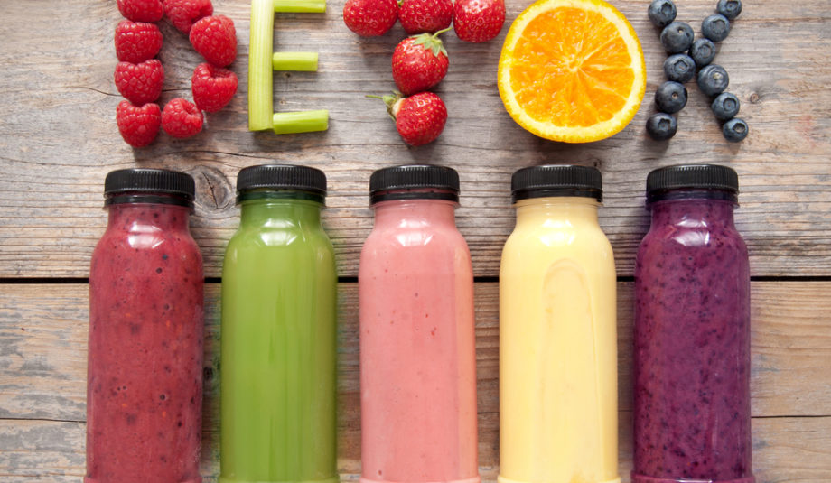

Suco Detox

INGREDIENTES:
- 3 Folhas de couve.
- 1 Laranja.
- 1/2 Gengibre.
- 300ml Água.
- Adoçante a gosto.
- Gelo a gosto.
MODO DE PREPARO:
- Em um liquidificador coloque 300ml de água
- Adicione a couve, laranja com casca, 1/2 gengibre e gelo
- Bata tudo por 2 minutos
- Passe em uma peneira fina e está pronto o seu Suco Detox.